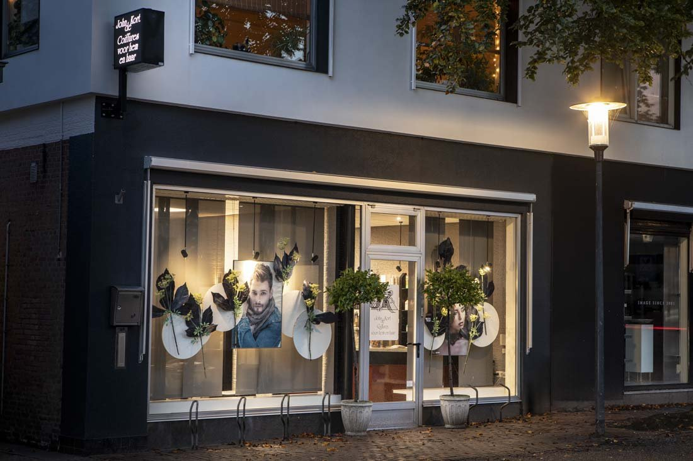

Kapsalon voor dames en heren
Een kapsalon met een lange historie
Kapsalon John de Kort Coiffures in de Dorpstraat in Ulvenhout. Begonnen in 1948, waar uw wensen met vakmanschap worden verwezenlijkt.

Waar u nooit tevergeefs aanklopt
Kapsalon John de Kort Coiffures is een zaak met een lange historie, begonnen in 1948 en in de huidige vormgeving sinds 1974.
Een kapsalon waar uw wensen met vakmanschap worden verwezenlijkt. U treft een fijne en gemoedelijke sfeer aan en u stapt graag weer binnen voor de volgende behandeling. U bent ook zomaar hartelijk welkom.

Knippen voor dames en heren
Kom langs of bel voor een afspraak. We zien u graag binnenkort in onze kapsalon.
- DamesKnippen met oog voor uw wensen
- HerenEen verzorgde knipbeurt
Prijzen vraagt u gewoon telefonisch of in de salon.

In de salon
Vakmanschap en een gemoedelijke sfeer maken een bezoek aan de salon bijzonder. Loop gerust binnen of maak vooraf een afspraak.
Openingstijden
| Maandag | gesloten |
| Dinsdag | 8.30 tot 12.00 en 13.00 tot 18.00 |
| Woensdag | 8.30 tot 12.00 en 13.00 tot 18.00 |
| Donderdag | 8.30 tot 12.00 en 13.00 tot 18.00 |
| Vrijdag | 8.30 tot 12.00 en 13.00 tot 20.45 |
| Zaterdag | 8.00 tot 13.00 |
Langskomen
Kapsalon John de Kort
Dorpstraat 91
4851 CL Ulvenhout